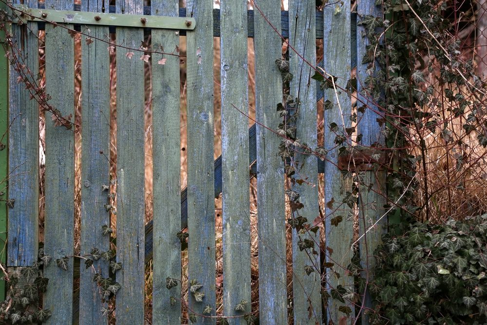
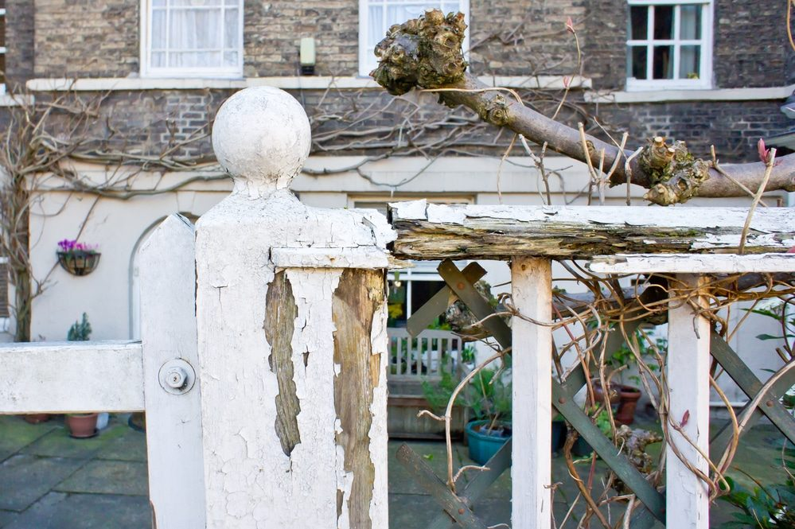

In This Guide
- Rot starts with moisture, and the parts of a fence that touch soil or stay damp are hit first.
- Cedar, redwood, and pressure-treated lumber resist rot better than untreated boards, and post bases need gravel, concrete, and preservative.
- A water-repellent stain or sealer adds protection, and a quick spray test shows when it is time to reapply.
- Trim plants, clear debris, clean gently, and inspect often, since small repairs cost far less than replacing a fence.
A fence sets a clear boundary, adds security, and lifts the look of a property. Wood is the most popular material for the job because it is affordable, easy to customize, and simple to stain or paint in a color that suits your house.
Wood also breaks down over time, and in a damp climate like ours rot is the biggest threat. This guide from Big Easy Fence explains what causes it and how to protect a wood fence from the ground up.
What Causes Wood to Rot
Rot begins when wood stays wet. Moisture reaches a fence through soil contact, weather, and debris, and the bottom of the fence is hit hardest because it sits in the ground. Insects and pests add to the damage.
Rot shows up in more than one way. Wood that turns soft, cracks, and smells musty is a sign of moisture damage, and it tends to start near the ground. Wood that turns dry and brittle, usually higher up, points to wear from sun and harsh weather. Both weaken the fence, so it helps to know what you are looking at.

Start With the Right Wood
The type of wood sets how much maintenance a fence needs. Rot-resistant choices such as cedar and redwood last longer, and pressure-treated lumber is made to handle moisture, decay, and bugs. Whichever you choose, a fence lasts longest when it gets steady attention. With proper care, most wood fences can stay in service for many years.
Install It to Keep Moisture Out
A good installation does more against rot than any product. Follow local rules and permit requirements first, then focus on the parts that sit in or near the soil.
Protect the Post Bases
The contact between the bottom of a fence and the soil is the main cause of decay, and it is worse with untreated or undertreated wood. A sure way to protect the base is to put gravel and concrete in the hole before setting the post. Some fence panels are sold untreated, so coat them with a wood preservative, and choose one rated for ground contact on any part that goes in the ground.
Watch for Other Sources of Moisture
Erosion, irrigation, and sprinklers can also soak the base of a fence. Aim sprinklers away from the wood and keep soil from piling against the boards. Replacing a rotted fence with new wood does not solve anything if the same conditions are still there.
Add Layers of Protection
Coatings on the outside give a second line of defense. They also help keep the fence looking good. How often you need to reapply depends on the soil, the temperature, moisture, and rainfall.
Stain, Sealant, or Paint

Water-repellent sealants and oil-based stains guard against rain and humidity. Whichever finish you use, keep it in good shape, because failing paint is an invitation for moisture. Our guide to choosing the best wood stain for fences helps you pick a product.
The Spray Test
To find out whether a fence needs another coat, spray it with water. If the wood absorbs the water, it is time to reapply. If the water beads up on the surface, the coating is still working.
Habits That Prevent Rot
Moisture can reach the fence by other routes than the ground. These habits close those routes.
- Keep plants under control. Vines, shrubs, and flowers planted against the fence hold moisture and hide damp, decaying leaves. Trim them back so air and sun reach the boards.
- Go easy on decorations. Seasonal decor should be light enough not to weigh on the fence, and it should not trap water against the wood.
- Clean gently. Wash with mild soap and a soft brush. Harsh, toxic products can harm the fence, and a pressure washer on a low setting is best for lifting dirt. A paste of baking soda and water can lift light discoloration.
- Treat mildew carefully. Algae and mold need extra care, so wear gloves and a mask, and follow the label on any cleaner you use.
- Inspect often. Check for soft or dark spots, and look closely at the bottoms of boards, the edges, and the nails and screws. On wood-and-wire fences, look for rust that could spread to the wood.
Repair Early, Replace Less
After heavy rain or a storm, take a walk along the fence line. Look for standing water at the base, boards that have started to cup, and any post that moves when you push on it. These are the early warnings, and they are the easiest problems to fix.
Even high-quality wood can decay faster when it goes without care. Small repairs made on time can save you from replacing the whole fence, which costs far more in money and effort. Weak boards and posts also weaken the fence as a barrier, so they are worth fixing before they fail.
For local advice on wood in our humid climate, read this guide to preserving wood fences in New Orleans. If rot has already taken hold, professional fence repair is a good next step.
Seeing Signs of Rot on Your Fence?
Tell us what you are noticing, and we will help you decide whether a repair, a treatment, or a replacement makes the most sense.